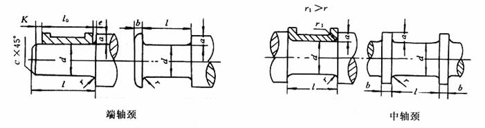

|
 |
||
|
代号 |
名
称 |
说 明 |
|
d a b r、r1 l |
轴颈直径 轴肩（环）高度 轴环宽度 圆角半径 轴颈长度 |
由计算确定，并按GB/T 321－1980圆整为标准直径 a≈（0.07～0.1）d，d+ b≈ 按零件倒角倒圆半径标准取 l=l0+k+e+c l0由轴承工作能力的需要定，e和k分别由热膨胀量和安装误差确定，e按标准取，对于固定轴轴颈l=l0 |